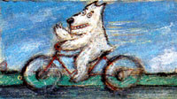
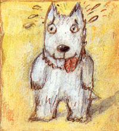

Want a slimmer dog or cat? Diet alone won't do it. By Randy Kidd, D.V.M.
Anyone with a dog or cat owes that animal the three essentials of a decent life: comfortable shelter, nutritious food and the opportunity (and, if necessary, the motivation) to get adequate exercise.
There is, of course, an overwhelming body of scientific evidence to support the notion that exercise is vital to human wellness. Most veterinarians believe that the same holds true for animals. Nearly all the documented benefits of exercise for humans are also apparent in active pets.
Mentally and emotionally, an exercising animal is invariably better off-happier, more alert, more content. Activity soothes life's many stresses. The exerciser sleeps better, has more libido and is better adjusted. In their book Pet Aerobics (Holt, Rinehart and Winston, 1984), Warren and Fay Eckstein state emphatically, "Nearly every behavior problem we have encountered in our 14 years of work with animals is directly attributable to lack of exercise." (The Eck steins are professional animal trainers who have worked with more than 20,000 pets.) Mentioned in the Ecksteins' list of "ailments" that disappear after proper exercise are furniture chewing, biting, car chasing, hole digging and excessive barking.
Exercise keeps your pet lean and trim, too. There's simply no other way to get-and keep-the lard off. I used to tell clients with portly pets that diet was the key (the same advice physicians would give overweight patients). "This animal is grossly out of shape," I'd say, pounding my fist on the exam table. "It's eating too many groceries. Cut down on the vittles and it'll lose that fat." Since then I've learned that dieting alone doesn't work.
Decreased food intake is an important factor in losing weight, but exercise is a necessary companion. An animal (or human) loses only so much weight by dieting, and then stops at a level known as a set point. Exercise, however, lowers that set point, making it possible for Pooch to become the svelte self he's meant to be. And because creatures that exercise crave more nutritious foods and metabolize them more efficiently, a weight-control regimen of both reasonable diet and exercise can be virtually self-sustaining.
Physically active animals also have stronger and healthier bones, better muscle tone and fewer everyday ailments. Even maladies unique to the species occur less often. I seldom see canine hip dysplasia in a lean, active dog. Well-exercised hips build up a protective muscle mass that helps prevent dysplasia.
Cats, dogs and people all benefit most from aerobic exercise-activities that are sufficiently demanding to get and keep the lungs and heart pumping hard, but not so hard that the exerciser has to stop just to catch a breath. According to extensive research conducted by Dr. Kenneth Cooper at the Aerobics Center in Dallas, Texas, the most effective aerobic exercises for the human animal are crosscountry skiing, swimming, jogging or running, outdoor cycling and walking.
Unless you have an extraordinary pet, cycling and skiing are probably out of the question, but most dogs (and many cats) will walk or run with you.
Before you take that first step together, make sure that your pet is on a leash; exercise won't hurt it, but cars and other animals can. If your pet's a pooch, teach it to heel and to stay by your side always. And naturally, if your pet is particularly old or suffers from any malady that might impair its capacity for exercise, get your vet's advice first. (Don't neglect to have your doctor check you out, too, particularly if you're not used to vigorous activity.)
The key to effective aerobic exercise is to maintain a regular program of long, gentle workouts. Neither you nor your pet will get hurt if your sessions begin slowly and gradually work up to a level you both can handle easily. As a friend of mine says, "Start slow and then taper off."
In most cases, beginning workouts should consist of 15 to 20 minutes of easy walking. As you and your pet become accustomed to the activity (this can take several weeks; be patient), gradually increase the length and intensity-first to brisk walking, then (if you're both so inclined) to jogging or running. Promise your pet you'll stick with a continuing program for at least 90 days (this will give him or her time to begin to really appreciate the workouts). Ultimately you'll want to give your pet an aerobic workout for 20 to 30 minutes four or five times a week.
How will you know it's a truly aerobic workout? This will be difficult to determine for your pet; for you it's easier. Your pulse rate should exceed approximately 140 beats per minute. Remember not to push yourself; if you have trouble catching your breath, you're risking injury-and not getting the benefits you're exercising for. Animals have highly variable pulse rates, making it hard to evaluate their aerobic state. So as you walk or jog along with Rover or Kitty, keep track of your own pulse rate, and you'll have a general idea when the two of you are moving fast enough. All but the shortest-legged critters will easily keep up with a gait that'll give you both adequate aerobic exercise.
If you're going too fast or too far for your pet, it'll show you a long, droopy tongue that may turn bluish if you continue. Take a break and make tomorrow's workout shorter. Remember also that in hot weather your pet can't sweat as you do to keep cool. Be es pecially cautious during those dog days of summer.
Not every pet, of course, is inclined to run or jog. (You may not be either, for that matter.) If that's the case, there are other ways you can encourage your animal into activity. A dog accustomed to lazing around on the floor all day may come alive with a good game of fetch the stick. Even cats, although sometimes as single-minded as any critters on earth, can usually be persuaded to revert to the friskiness of their younger years. A cloth mouse tied to a string and pulled around for the feline to chase may do the trick. Or try encouraging Pussy to frolic by giving it an occasional catnip treat. You might also consider getting another. cat or dog to play with the one you have; most animals become more active around other animals.
In any case, start your exercise program today. And make every day's walk, jog or frolic a truly enjoyable play period for both of you.
|
|
|
 |
|
 |
|
|